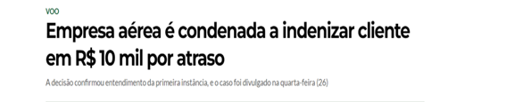

TEMPO É DINHEIRO! - Teoria do desvio produtivo: inovação na jurisprudência do STJ em respeito ao tempo do consumidor
Quem nunca perdeu preciosos minutos – ou até mesmo horas – em contato com o serviço de atendimento ao cliente – o famoso SAC – de empresas dos mais diversos ramos, na tentativa de solucionar problemas causados pela má prestação de serviços, cobranças indevidas ou solicitações referentes ao cancelamento de contratos?
O consumidor, tem sido constantemente alvo dessa subtração de tempo, especialmente em razão das longas jornadas a que costuma ser submetido ao se deparar com defeito em um produto ou serviço.
A constatação do tempo do consumidor como recurso produtivo e da conduta abusiva do fornecedor ao não empregar meios para resolver, em tempo razoável, os problemas originados pelas relações de consumo é que motivou a chamada teoria do desvio produtivo.
O Superior Tribunal de Justiça (“STJ”), na ânsia de tutelar os direitos dos consumidores que perdem tempo útil/produtivo de seu dia a dia na tentativa de solucionar referidas questões, encampou a teoria do desvio produtivo, firmando entendimento no sentido de que o tempo considerado desperdiçado/perdido pelo consumidor na solução de problemas gerados por empresas fornecedoras de serviço/produtos deve ser tido como dano indenizável, desde que haja comprovação do tempo dispendido.
DICA: Sempre tire print das conversas, anote os protocolos de atendimento, o nome das pessoas que te atenderam, print da ligação telefônica para demonstrar o tempo que você gastou tentando resolver aquele problema e e-mails.

O Projeto de Lei nº 4577/2021 visa ampliar os direitos de passageiros de companhias aéreas, especialmente em caso de cancelamento ou alteração de voo.
De acordo com o texto do projeto, os transportadores poderão oferecer condições mais favoráveis aos passageiros e, em todo caso, deverão oferecer informações adequadas e claras sobre as políticas de cancelamento e alteração, conforme prevê o art. 6º, III, da Lei nº 8.078, de 1990 – o Código de Defesa do Consumidor.
A justificativa segue no sentido de que a prestação de serviços pelas companhias aéreas no Brasil é alvo frequente de reclamações, especialmente sobre as dificuldades para o cancelamento e para a alteração de voos, sendo necessário assegurar direitos mínimos aos passageiros nessas circunstâncias.